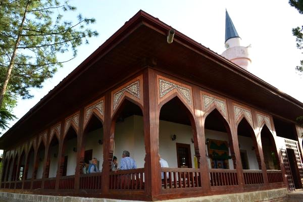
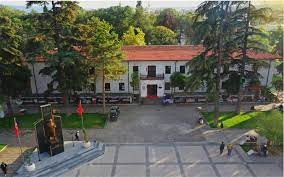
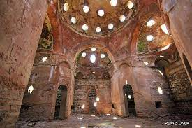

SİLAHTAR ÖMER PAŞA CAMİ
SİLAHTAR ÖMER PAŞA CAMİ
Erbaa topraklarında tarih içinde yolculuğumuza kent merkezinin batısında Akça Köyünde yer alan Silahtar Ömer Paşa Camii ile başlayacağız. Kentin batısında kent merkezine birkaç kilometre mesafede yer alan Akça (Fidi) Köyünde bulunan bu mabet sadece bu yörenin değil, Anadolu’daki ahşap camilerin de sağlam kalabilmiş en güzel ve zengin örneklerinden biridir. Bakır şamdanlardaki tarihlemelerden 1688 yılında o dönemle ilgili Ömer paşa isminde bir kişi tarafından tamirat yapıldığı belirtilmektedir. Dışarıdan bakıldığında sade bir görünüşe sahip olan caminin etrafı üç taraftan bir revak sırası ile kapatılmış, dıştan taş örgülü bir avlu duvarı ile çevrilmiştir. Kuzeyindeki yuvarlak kemerli, tuğla örgülü saçaklı kapı cümle kapısıdır. Bu kapı diğer kapılardan daha büyüktür. Camiye zengin işlemeli bir kapıdan girilir. Kapı kanatları çatma tekniği ile yapılmış, yüzeyleri panolardan ayrılarak kabaralı çivilerle zenginleştirilmiş. Kapı çerçevesi ve kemeri, kilitli geçme taş görünümünde boyanmıştır. Kitabesinde Osmanlıca yazı bulunmaktadır. Burada taşın ahşaba uyarlanmış şekli görünmektedir. Dıştaki sadeliğin aksine caminin içi son derece zengin bir görünüme sahiptir. Cami hem eski inşaat tekniğini hem de devrinin ahşap süslemedeki motif renk kompozisyonunu en iyi şekilde temsil etmektedir. Ortada iç yüzeylerinde burmalar, çıtalar bulunan dört ahşap destek ve bunların arasına atılan hatıllara taşıtılan tavan bir çiçek bahçesini anımsatır şekilde renklendirilmiştir. Mimari tarzı Selçuklu mimarisinin temsilcisi olarak ayakta durmakta ve o dönemin inşaat tekniklerini en iyi şekilde göstermektedir.

ERBAA KENT MÜZESİ
Yeni yerleşimde Erbaa’nın Hükümet Konağı olarak 1946 yılında inşa edilen bina bu gün şehir meydanında Erbaa Kent Müzesi olarak misafirlerini ağırlamaktadır. Müze, Erbaa’nın tarihsel derinliğini ve sosyal zenginliğini gelecek nesillere aktarmak amacı ile her türlü görsel materyali bünyesinde bulundurmaktadır. Erbaa halkından temin edilen ve yakın tarihe ışık tutan eşyalarla oluşturulan Kent Müzesi, yerli ve yabancı turistlere Erbaa kültürünü tanıtma misyonunu yerine getirmektedir. Müzenin duvarlarında asılı duran fotoğraflar, Erbaa’nın yakın tarihine, sosyal yapısına ışık tutmakta, yakın tarihin hatıralarının sıcaklığını korumasını sağlamaktadır. Kent Müzesinin önemli bir bölümü kaybolmuş ya da kaybolmaya yüz tutmuş mesleklerin belleklerde taze tutulması için ayrılmıştır. Modern zamana yenik düşmüş, sürdürülememiş mesleklerin ve ustalarının canlandırıldığı bu bölüm, ziyaretçilerini eski Erbaa çarşısına taşımaktadır. Semerci, çarkçı, kunduracı gibi mesleklerin zanaatkârları ve bu zanaatkârların icralarının orijinal malzemeleri ile canlandırıldığı bu salon oldukça ilgi çekicidir.
EREK HAMAMI
Etrafında farklı uygarlıklardan kalan kültürel mirasa ev sahipliği yapan Erbaa’nın ilçe oluşu bundan 143 yıl öncesine uzanmaktadır. Kelkit Nehri kenarında kurulan Erbaa 1939, 1942 ve 1943 yılarında yaşanan ağır depremler sonucu ayakta kalan birkaç yapı haricinde tamamen yerle bir olmuştur. Şehir 1946 yılında yeni hükümet binasının yapılması ile eski yerleşim yerinin güneyine taşınmaya başlamıştır. Bu gün Erek Hamamı adı ile anılan hamam, Eski Erbaa’dan geride kalan birkaç yapıdan biridir. Erbaa Otogarının yüz elli metre kadar kuzeydoğusunda aşağı mahalle olarak adlandırılan mevkide bulunmaktadır. Zamanının mimari yapısına göre muntazam olarak inşa edilmiş olan hamam özel girişimciler Hacı Durmuşzade Hüseyin Efendi ve Hacızade Ahmet Efendi tarafından yaptırılmıştır. Eski Erbaa’dan ayakta kalan bu yapının kültürel miras olarak yaşatılması için Erbaa Belediyesi yeni şehir yapılanmasında hamam ve çevresinin korunması için gerekli önlemleri almak suretiyle çalışmalarına başlamıştır.